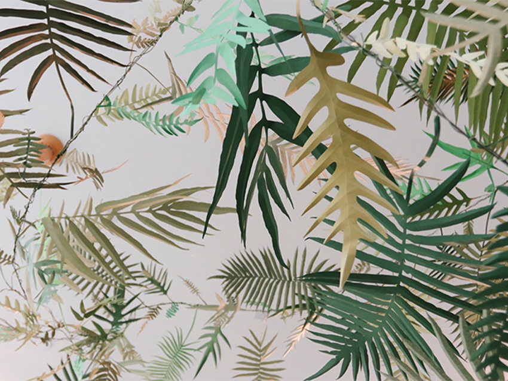
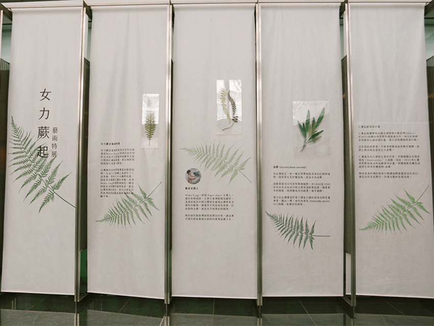
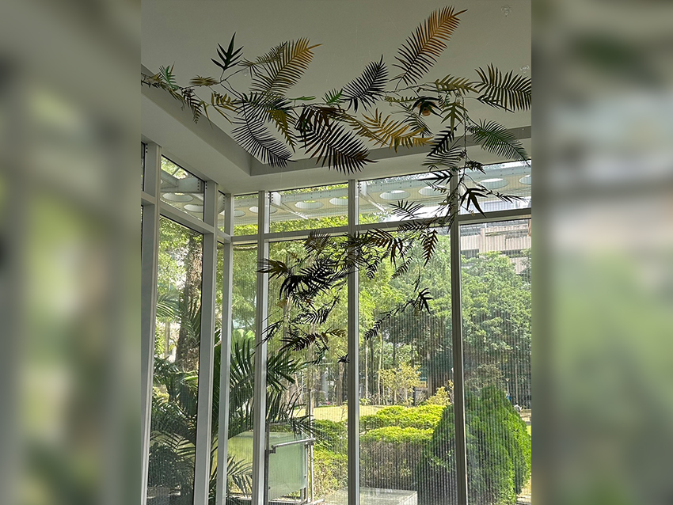
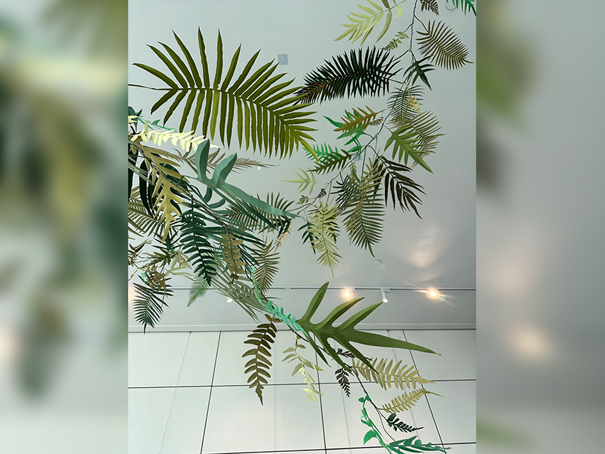
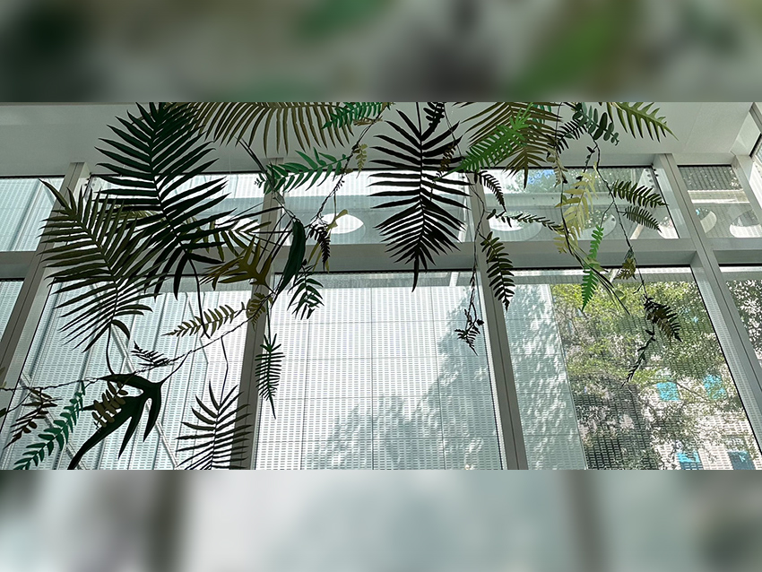

|  |
今年以女力蕨起藝術特展作為2023秋天有藝思的首波活動，邀請剪紙藝術家Wuba Yang以特殊的紙材塑形方式創作大型植物紙雕與多層次懸掛的藝術裝置，將台灣蕨類栩栩如生地置入眼前。女力蕨起藝術特展不僅展現女性創新視角如何翻轉傳統剪紙藝術，更可於展覽中賞析仁寶所投入關注的鹵蕨復育行動，同時讓日日身處科技叢林的同仁們轉身即能感受到台灣之美。
|  |
女力蕨起藝術特展
女力蕨起藝術特展是來自剪紙藝術家Wuba Yang 以特殊的紙材塑形方式創作大型植物紙雕與多層次懸掛的藝術裝置，將台灣蕨類栩栩如生地置入眼前。
台灣擁有全世界最豐富的蕨類植物，在這小小島嶼上就留存了800多種，更有60多種特有種，因此素有蕨類王國的美稱。透過Wuba Yang的視野與創作，轉身即能感受蓊鬱的森林氣息，邂逅台灣蕨類的美好，更可以感受到其將傳統剪紙藝術重新演繹的細膩手藝。
 |
藝術家簡介
Wuba Yang擅長剪製植物剪紙創作，主要以臺灣蕨類為靈感，透過剪紙技巧與立體塑形重現台灣常見及獨有的蕨類，展現其不同姿態的美感，打造植物永續，避免活體植物的採集。Wuba Yang的創作跳脫傳統剪紙既定印象，讓逐漸式微的剪紙藝術以創新的面貌延續下去。
鹵蕨介紹
鹵蕨（Acrostichum aureum） 為台灣原生，是一種在熱帶地區常見的紅樹林植物。因其常生長於鹽鹵地，故命名為鹵蕨。鹵蕨曾是河口代表性蕨類植物，在1860至1880年代台北淡水河口附近曾有過採集紀錄，隨著都市的開發，致使棲地受到破壞，幾乎絕跡。現今在台灣僅見於墾丁國家公園的佳洛水與花蓮東里、羅山一帶，被列為易危（Vulnerable species, VU）物種，亟需受到保育。
仁寶鹵蕨復育計畫
仁寶長期響應聯合國永續發展行動目標（SDGs），於2021年開始與荒野保護協會合作，執行紅樹林生態教育永續經營計畫，進行溼地環境教育行動。近年因氣候變遷，不僅導致極端氣候事件頻傳，也對生物多樣性產生巨大衝擊，仁寶身為兆元營收企業的代表，亦積極關注生物多樣性（Biodiversity）之議題，因此，2023年仁寶與荒野協會合作鹵蕨復育計畫，將環境教育擴及溼地原生與易危種植物-鹵蕨．期待透過長期的復育行動讓鹵蕨能重回淡水河口，穩定自然生長繁衍，恢復完整的生態系統。
|  |
|  |
|  |